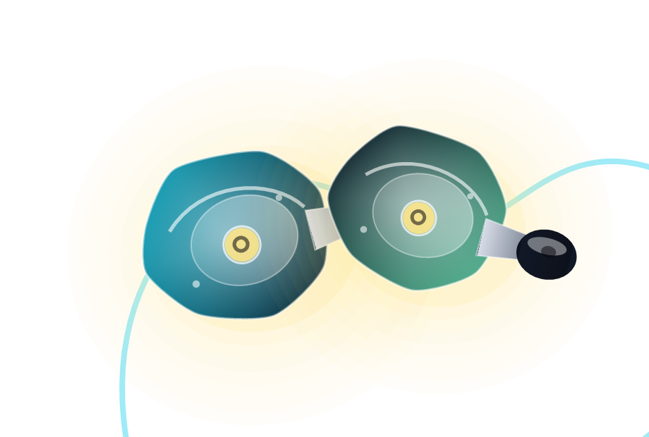
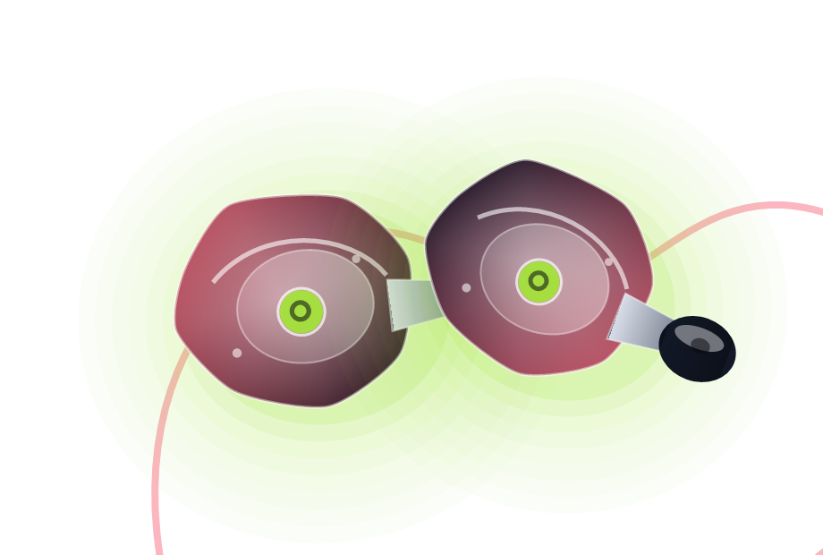
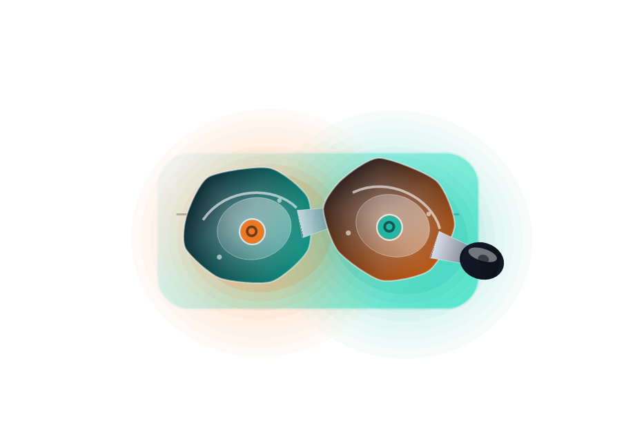

Studio IEMs
Balanced monitors for producers, editors, streamers, and musicians who want truthful mids and stable imaging.
Monitor 7
Aura One
Reference filters
Dixon catalog
Browse the Dixon family by how you listen: reference detail for studio work, stability for stage, wireless comfort for travel, and modular accessories for upgrades.

Each category has a slightly different tuning goal, shell fit, and accessory bundle.
Balanced monitors for producers, editors, streamers, and musicians who want truthful mids and stable imaging.

High isolation, faster attack, and grip-focused shells for singers, guitarists, drummers, and live techs.

Everyday Dixon sound with a pocket charging case, ambient mode, low latency, and detachable ear hooks.

Replacement cables, tuning filters, balanced adapters, silicone tips, foam tips, and hard-shell carry cases.
Use the buttons to narrow the product cards without leaving the page.
Neutral reference model with smooth treble and firm bass control.

Warm, clean tuning for creators who move between work and casual listening.
High-output hybrid design with punchy transients and upgraded isolation.
Entry performer model with bright vocals and a lightweight fit.
Charging case, detachable hooks, and an easy-going Dixon tuning.
Five tip sizes, two tuning filters, cable clip, and a compact hard case.